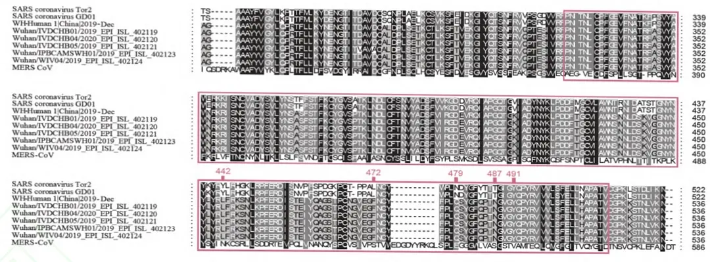
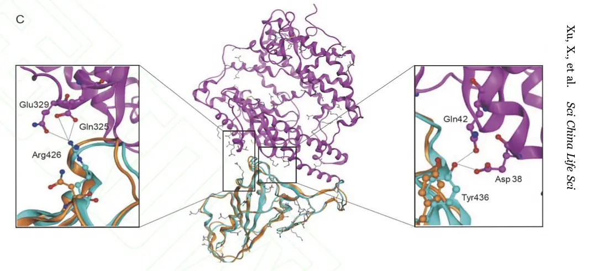
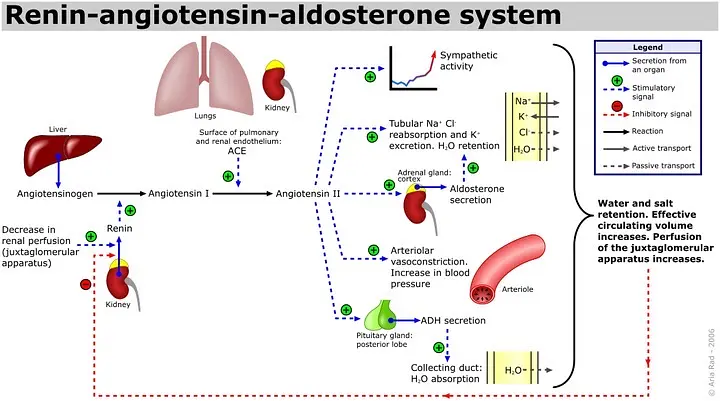

2019-nCoV（武汉新型冠状病毒）属于冠状病毒属，冠状病毒是一种包膜的单链RNA病毒，可感染野生动物、宠物，畜群和人类，根据新型冠状病毒独特的系统发育位置，它们可能与SARS/SARS样冠状病毒共享一个共同的祖先，类似于蝙蝠冠状病毒HKU9-1.
新型冠状病毒的S蛋白含有两个亚基，S1和S2。S1通过与宿主受体结合促进病毒感染。它包括两个域，N -末端域和C -末端RBD域，它们直接与宿主受体相互作用。科学家研究了其S蛋白的RBD域。与中东呼吸综合征冠状病毒ORF1a和ORF1b相比，s蛋白通常具有最多的可变氨基酸序列。新型冠状病毒的S蛋白在RBD域中有多个序列与SARS-CoV_Tor2和HP03-GZ01具有较高的同源性。
科学家对新型冠状病毒的s蛋白进行了结构建模，并评估了其与人类ACE2分子相互作用的能力。基于计算机引导的同源建模方法，以SARS冠状病毒s蛋白晶体结构为模板，利用Swiss-model构建新型冠状病毒 s蛋白结构模型。注意，wu - cov和SARS-CoV s -蛋白之间的氨基酸序列一致性为76.47%。然后根据SARS-CoV S-protein RBD域与其受体ACE2 的晶体结构，通过结构叠加和分子刚性对接对武汉CoV S-蛋白与人ACE2结合的三维复杂结构进行建模。
由于新型冠状病毒的s蛋白中Arg426被Asn426取代而失去了氢键相互作用，所以新型冠状病毒 s蛋白的结合自由能（binding free energy）比SARS-CoV s蛋白的结合自由能强。新型冠状病毒s蛋白虽然相对较弱，但被认为与人类ACE2有很强的结合亲和力。 新型冠状病毒的S蛋白和SARS-CoV s -蛋白在RBD域中具有几乎相同的三维结构，从而在相互作用界面上保持了相似的范德华和静电本征关系。
综上所述，新型冠状病毒与SARS冠状病毒有一个共同的祖先，与蝙蝠冠状病毒HKU9-1相似。新型冠状病毒 s蛋白的RBD域支持与人类ACE2分子的强相互作用。1月22日，在达沃斯世界经济论坛上，"流行病防疫和创新联盟"执行长Richard Hatchett表示，新型肺炎的死亡率会比SARS低，但是传染性甚于SARS.
ACE（血管紧张素转化酶）是一种外肽酶，作用是将没活性的血管紧张素1转化为有活性的血管紧张素2.血管紧张素是肾素-血管紧张素系统（renin-angiotensin system）的重要组成成分。血管紧张素能引起血管收缩，升高血压。
肾素分泌量增加会导致血管紧张素1.分泌量增加，通过正反馈调节，ACE2的分泌量也将增加，为新型冠状病毒提供更多的结合位点。
肾素由肾脏球旁器的颗粒细胞经以下刺激分泌：
1.血压下降（糖尿病，心包炎，心肌病，外伤）
2.原尿中氯化钠浓度下降（低钠血症）
3.交感神经兴奋（剧烈运动，缺氧，焦虑，甲亢，低血氧症，低钾血症，心衰等）
所以患有以上疾病的人群为易感人群。上述疾病多在老年人中出现，所以临床表现为新型冠状病毒不易感染儿童青年。但是该病毒遗传物质为单链，易发生适应性突变。
祝大家身体健康，合家平安！参考：
【1】Xintian Xu, Ping Chen,Jingfang Wang,Jiannan Feng,Hui Zhou, Xuan Li ,Wu Zhong,Pei Hao.Evolution of the novel coronavirus from the ongoing Wuhan outbreak and modeling of its spike protein for risk of human transmission .Science China.2020.1
【2】王玢，左明雪，人体及动物生理学，第三版，高等教育出版社，248页
【3】http//de.wikipedia.org/
【4】https://www.douban.com/note/749896919/